seqFISH exploratory data analysis
Kayla Jackson
2023-02-26
vig7_seqfish.RmdDataset
The data used in this vignette are described in Integration of spatial
and single-cell transcriptomic data elucidates mouse organogenesis.
Briefly, seqFISH was use to profile 351 genes in several mouse embryos
at the 8-12 somite stage (ss). We will focus on a single biological
replicate, embryo 3. The raw and processed counts and corresponding
metadata are available to download from the Marioni
lab. Expression matrices, segmentation data, and segmented cell
vertices are provided as R objects that can be readily imported into an
R environment. The data relevant to this vignette have been converted to
a SFE object and are available to download here
from Box.
The data have been added to the SFEData package on
Bioconductor and will be available in the 3.17 release.
We will begin by downloading the data and loading it in to R.
library(Voyager)
library(SingleCellExperiment)
#> Loading required package: SummarizedExperiment
#> Loading required package: MatrixGenerics
#> Loading required package: matrixStats
#>
#> Attaching package: 'MatrixGenerics'
#> The following objects are masked from 'package:matrixStats':
#>
#> colAlls, colAnyNAs, colAnys, colAvgsPerRowSet, colCollapse,
#> colCounts, colCummaxs, colCummins, colCumprods, colCumsums,
#> colDiffs, colIQRDiffs, colIQRs, colLogSumExps, colMadDiffs,
#> colMads, colMaxs, colMeans2, colMedians, colMins, colOrderStats,
#> colProds, colQuantiles, colRanges, colRanks, colSdDiffs, colSds,
#> colSums2, colTabulates, colVarDiffs, colVars, colWeightedMads,
#> colWeightedMeans, colWeightedMedians, colWeightedSds,
#> colWeightedVars, rowAlls, rowAnyNAs, rowAnys, rowAvgsPerColSet,
#> rowCollapse, rowCounts, rowCummaxs, rowCummins, rowCumprods,
#> rowCumsums, rowDiffs, rowIQRDiffs, rowIQRs, rowLogSumExps,
#> rowMadDiffs, rowMads, rowMaxs, rowMeans2, rowMedians, rowMins,
#> rowOrderStats, rowProds, rowQuantiles, rowRanges, rowRanks,
#> rowSdDiffs, rowSds, rowSums2, rowTabulates, rowVarDiffs, rowVars,
#> rowWeightedMads, rowWeightedMeans, rowWeightedMedians,
#> rowWeightedSds, rowWeightedVars
#> Loading required package: GenomicRanges
#> Loading required package: stats4
#> Loading required package: BiocGenerics
#>
#> Attaching package: 'BiocGenerics'
#> The following objects are masked from 'package:stats':
#>
#> IQR, mad, sd, var, xtabs
#> The following objects are masked from 'package:base':
#>
#> anyDuplicated, aperm, append, as.data.frame, basename, cbind,
#> colnames, dirname, do.call, duplicated, eval, evalq, Filter, Find,
#> get, grep, grepl, intersect, is.unsorted, lapply, Map, mapply,
#> match, mget, order, paste, pmax, pmax.int, pmin, pmin.int,
#> Position, rank, rbind, Reduce, rownames, sapply, setdiff, sort,
#> table, tapply, union, unique, unsplit, which.max, which.min
#> Loading required package: S4Vectors
#>
#> Attaching package: 'S4Vectors'
#> The following objects are masked from 'package:base':
#>
#> expand.grid, I, unname
#> Loading required package: IRanges
#> Loading required package: GenomeInfoDb
#> Loading required package: Biobase
#> Welcome to Bioconductor
#>
#> Vignettes contain introductory material; view with
#> 'browseVignettes()'. To cite Bioconductor, see
#> 'citation("Biobase")', and for packages 'citation("pkgname")'.
#>
#> Attaching package: 'Biobase'
#> The following object is masked from 'package:MatrixGenerics':
#>
#> rowMedians
#> The following objects are masked from 'package:matrixStats':
#>
#> anyMissing, rowMedians
library(SpatialExperiment)
library(SpatialFeatureExperiment)
library(batchelor)
library(scater)
#> Loading required package: scuttle
#> Loading required package: ggplot2
library(scran)
library(bluster)
library(purrr)
#>
#> Attaching package: 'purrr'
#> The following object is masked from 'package:GenomicRanges':
#>
#> reduce
#> The following object is masked from 'package:IRanges':
#>
#> reduce
library(tidyr)
#>
#> Attaching package: 'tidyr'
#> The following object is masked from 'package:S4Vectors':
#>
#> expand
library(dplyr)
#>
#> Attaching package: 'dplyr'
#> The following object is masked from 'package:Biobase':
#>
#> combine
#> The following objects are masked from 'package:GenomicRanges':
#>
#> intersect, setdiff, union
#> The following object is masked from 'package:GenomeInfoDb':
#>
#> intersect
#> The following objects are masked from 'package:IRanges':
#>
#> collapse, desc, intersect, setdiff, slice, union
#> The following objects are masked from 'package:S4Vectors':
#>
#> first, intersect, rename, setdiff, setequal, union
#> The following objects are masked from 'package:BiocGenerics':
#>
#> combine, intersect, setdiff, union
#> The following object is masked from 'package:matrixStats':
#>
#> count
#> The following objects are masked from 'package:stats':
#>
#> filter, lag
#> The following objects are masked from 'package:base':
#>
#> intersect, setdiff, setequal, union
library(fossil)
#> Loading required package: sp
#>
#> Attaching package: 'sp'
#> The following object is masked from 'package:SpatialFeatureExperiment':
#>
#> bbox
#> The following object is masked from 'package:IRanges':
#>
#> %over%
#> Loading required package: maps
#>
#> Attaching package: 'maps'
#> The following object is masked from 'package:purrr':
#>
#> map
#> Loading required package: shapefiles
#> Loading required package: foreign
#>
#> Attaching package: 'shapefiles'
#> The following objects are masked from 'package:foreign':
#>
#> read.dbf, write.dbf
library(ggplot2)
library(patchwork)
library(spdep)
#> Loading required package: spData
#> To access larger datasets in this package, install the spDataLarge
#> package with: `install.packages('spDataLarge',
#> repos='https://nowosad.github.io/drat/', type='source')`
#> Loading required package: sf
#> Linking to GEOS 3.10.2, GDAL 3.4.2, PROJ 8.2.1; sf_use_s2() is TRUE
library(BiocParallel)
theme_set(theme_bw())
# the commented line downloads the data from Box and stores it in the current directory
download.file("https://caltech.box.com/public/static/ulrqr1gk7oh21h9ejgua1xajs6dsbvrj",'./seqfish_em3.Rds', mode='wb', method = 'wget', quiet = TRUE)
sfe <- readRDS("./seqfish_em3.Rds")
sfe
#> class: SpatialFeatureExperiment
#> dim: 351 23194
#> metadata(0):
#> assays(1): counts
#> rownames(351): Abcc4 Acp5 ... Zfp57 Zic3
#> rowData names(0):
#> colnames(23194): embryo3_Pos0_cell10_z2 embryo3_Pos0_cell10_z5 ...
#> embryo3_Pos39_cell98_z5 embryo3_Pos39_cell99_z2
#> colData names(15): uniqueID embryo ... celltype_mapped_refined
#> sample_id
#> reducedDimNames(0):
#> mainExpName: NULL
#> altExpNames(0):
#> spatialCoords names(2) : X Y
#> imgData names(0):
#>
#> Geometries:
#> colGeometries: seg_coords (GEOMETRY)
#>
#> Graphs:
#> sample01:The rows in the count matrix correspond to the 351 barcoded genes measured by seqFISH. Additionally, the authors provide some metadata, including the field of view and z-slice for each cell. We will filter the count matrix and metadata to include only cells from a single z-slice.
names(colData(sfe))
#> [1] "uniqueID" "embryo"
#> [3] "pos" "z"
#> [5] "x_global" "y_global"
#> [7] "x_global_affine" "y_global_affine"
#> [9] "embryo_pos" "embryo_pos_z"
#> [11] "Area" "UMAP1"
#> [13] "UMAP2" "celltype_mapped_refined"
#> [15] "sample_id"
mask <- colData(sfe)$z == 2
sfe <- sfe[,mask]Quality control
We will begin quality control (QC) of the cells by computing metrics
that are common in single-cell analysis and store them in the
colData field of the SFE object. Below, we compute the
number of counts per cell. We will also compute the average and display
it on the violin plot.
colData(sfe)$nCounts <- colSums(counts(sfe))
avg <- mean(colData(sfe)$nCounts)
violin <- plotColData(sfe, "nCounts") +
geom_hline(yintercept = avg, color='red') +
theme(legend.position = "top")
spatial <- plotSpatialFeature(sfe, "nCounts", colGeometryName = "seg_coords") +
theme_void()
violin + spatial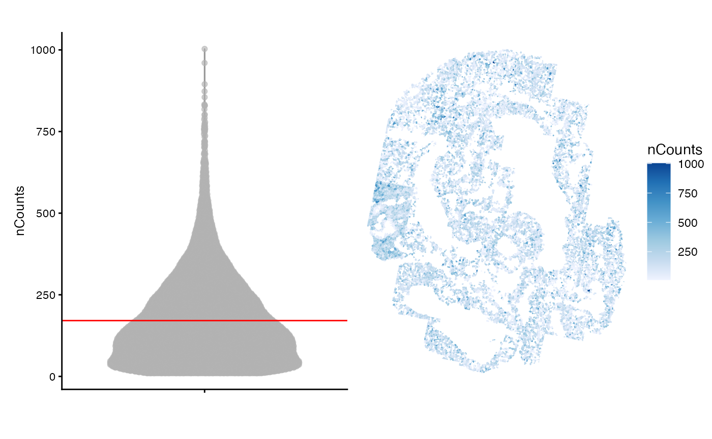
Notably, the cells in this dataset have fewer counts that would be expected in a single-cell sequencing experiment and the cells with higher counts seem to be dispersed throughout the tissue. Fewer counts are expected in seqFISH experiments where probing for highly expressed genes may lead to optical crowding over multiple imaging rounds.
Since the counts are collected from several fields of view, we will visualize the number of cells and total counts for each field separately.
pos <- colData(sfe)$pos
counts_spl <- split.data.frame(t(counts(sfe)), pos)
# nCounts per FOV
df <- map_dfr(counts_spl, rowSums, .id='pos') |>
pivot_longer(cols=contains('embryo'), values_to = 'nCounts') |>
mutate(pos = factor(pos, levels = paste0("Pos", seq_len(length(unique(pos)))-1))) |>
dplyr::filter(!is.na(nCounts))
cells_fov <- colData(sfe) |>
as.data.frame() |>
mutate(pos = factor(pos, levels = paste0("Pos", seq_len(length(unique(pos)))-1))) |>
ggplot(aes(pos,)) +
geom_bar() +
theme_minimal() +
labs(
x = "",
y = "Number of cells") +
theme(axis.text.x = element_text(angle = 90))
counts_fov <- ggplot(df, aes(pos, nCounts)) +
geom_boxplot(outlier.size = 0.5) +
theme_minimal() +
labs(x = "", y = 'nCounts') +
theme(axis.text.x = element_text(angle = 90))
cells_fov / counts_fov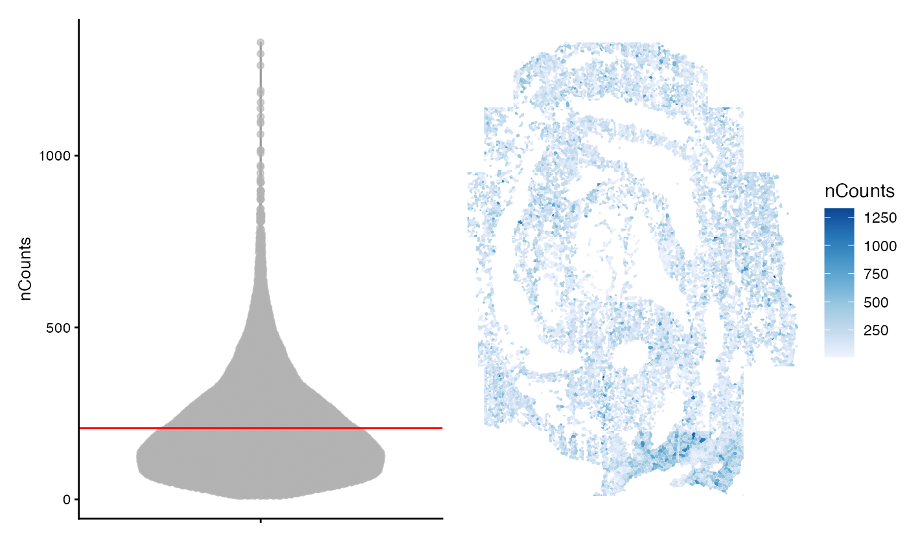
There is some variability in the total number of counts in each field of view. It is not completely apparent what accounts for the low number of counts in some FOVs. For example, FOV 22 has the fewest number of cells, but comparably more counts are detected there than in regions with more cells (e.g. FOV 18).
Next, will will compute the number of genes detected per cell, defined here as the number of genes with non-zero counts. We will again plot this metric for each FOV as is done above.
colData(sfe)$nGenes <- colSums(counts(sfe) > 0)
avg <- mean(colData(sfe)$nGenes)
violin <- plotColData(sfe, "nGenes") +
geom_hline(yintercept = avg, color='red') +
theme(legend.position = "top")
spatial <- plotSpatialFeature(sfe, "nGenes", colGeometryName = "seg_coords") +
theme_void()
violin + spatial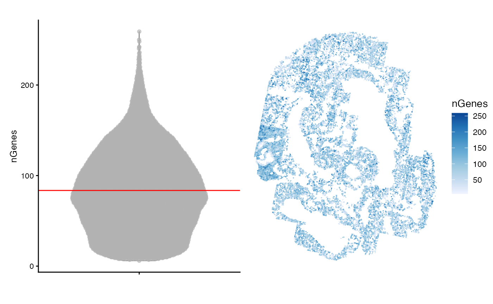
Many cells have fewer than 100 detected genes. This in part reflects that the panel of 351 probed genes was chosen to distinguish cell types at these developmental stages and that distinct cell types will likely express a small subset of the 351 genes. The authors also note that the gene panel consists of lowly expressed to moderately expressed genes. Taken together, these technical details can explain the relatively low number of counts and genes per cell.
Here, we plot the number of genes detected per cell in each FOV.
df <- map_dfr(counts_spl, ~ rowSums(.x > 0), .id='pos') |>
pivot_longer(cols = contains('embryo'), values_to = 'nGenes') |>
mutate(pos = factor(pos, levels = paste0("Pos", seq_len(length(unique(pos)))-1))) |>
filter(!is.na(nGenes)) |>
merge(df)
genes_fov <- ggplot(df, aes(pos, nGenes)) +
geom_boxplot(outlier.size = 0.5) +
theme_bw() +
labs(x = "") +
theme(axis.text.x = element_text(angle = 90))
genes_fov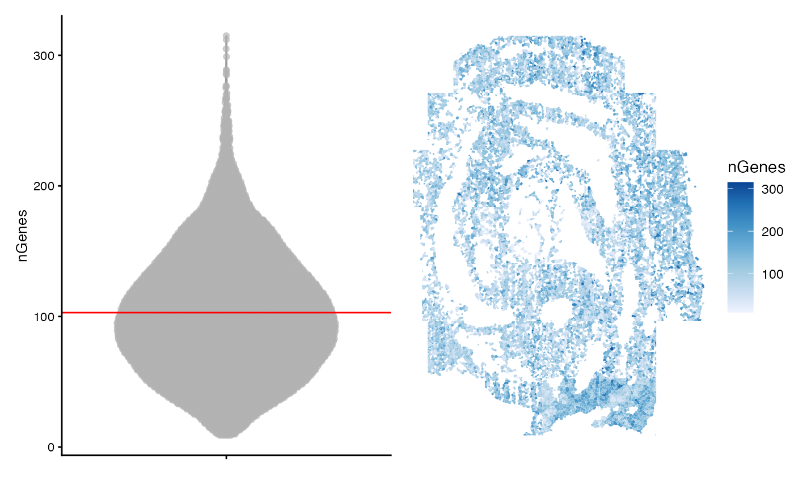
This plot mirrors the plot above for total counts. No single FOV stands out as an obvious outlier.
The authors have provided cell type assignments as metadata. We can assess whether the low quality cells tend to be located in a particular FOV.
meta <- data.frame(colData(sfe))
meta <- meta |>
group_by(pos) |>
add_tally(name = "nCells_FOV") |>
filter(celltype_mapped_refined %in% "Low quality") |>
add_tally(name = "nLQ_FOV") |>
mutate(prop_lq = nLQ_FOV/nCells_FOV) |>
distinct(pos, prop_lq) |>
ungroup() |>
mutate(pos = factor(pos, levels = paste0("Pos", seq_len(length(unique(pos)))-1)))
prop_lq <- ggplot(meta, aes(pos, prop_lq)) +
geom_bar(stat = 'identity' ) +
theme_bw() +
theme(axis.text.x = element_text(angle = 90))
prop_lq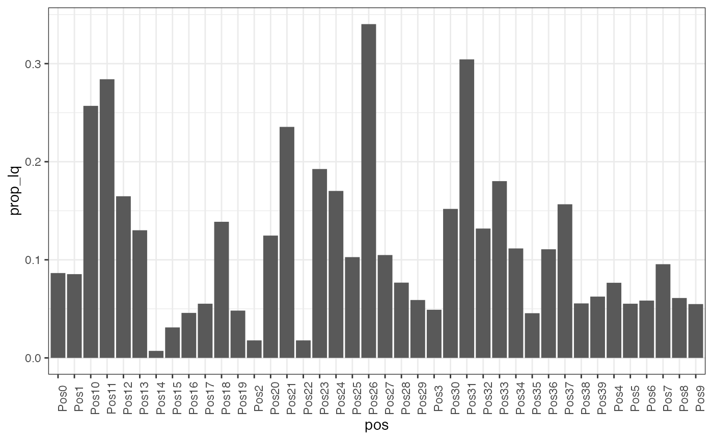 It appears that FOV 26 and 31 have the largest fraction of low quality cells. Interestingly, these do not correspond to the FOVs with the largest number of cells overall.
Here we plot nCounts vs. nGenes for each FOV.
count_vs_genes_p <- ggplot(df, aes(nCounts, nGenes)) +
geom_point(
alpha = 0.5,
size = 1,
fill = "white"
) +
facet_wrap(~ pos)
count_vs_genes_p 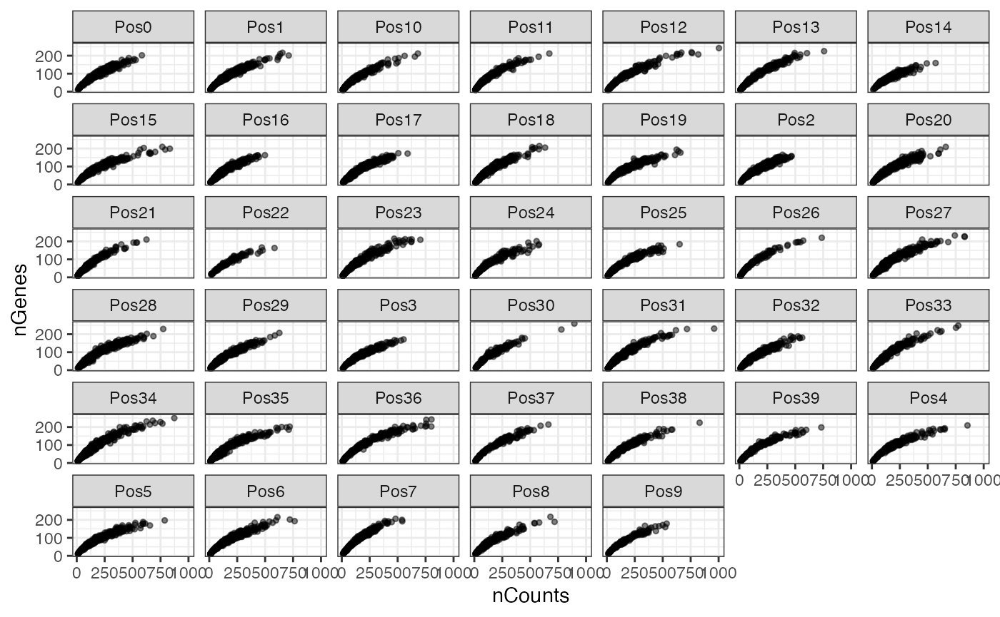
As in scRNA-seq, gene expression variance in seqFISH measurements is overdispersed compared to variance of counts that are Poisson distributed.
gene_meta <- map_dfr(counts_spl, colMeans, .id = 'pos') |>
pivot_longer(cols = -pos, names_to = 'gene', values_to = 'mean')
gene_meta <- map_dfr(counts_spl, ~colVars(.x, useNames = TRUE), .id = 'pos') |>
pivot_longer(-pos, names_to = 'gene', values_to='variance') |>
full_join(gene_meta)
#> Joining with `by = join_by(pos, gene)`To understand the mean-variance relationship, we compute the mean and variance for each gene among cells in tissue. As above, we will perform this calculation separately for each FOV
ggplot(gene_meta, aes(mean, variance)) +
geom_point(
alpha = 0.5,
size = 1,
fill = "white"
) +
facet_wrap(~ pos) +
geom_abline(slope = 1, intercept = 0, color = "red") +
scale_x_log10() + scale_y_log10() +
annotation_logticks() +
theme_bw()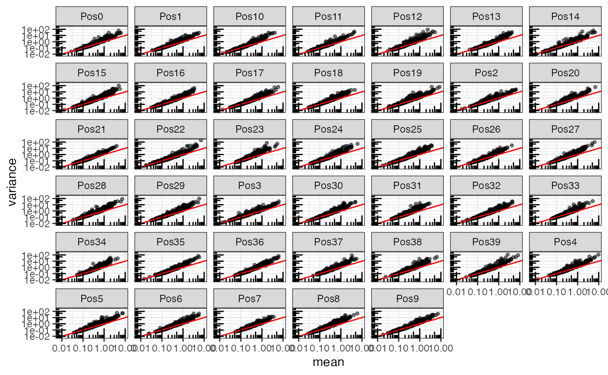
The red line represents the line \(y = x\), which is the mean-variance relationship that would be expected for Poisson distributed data. The data deviate from this expectation in each FOV. In each case, the variance is greater than what would be expected.
Data normalization and dimension reduction
The exploratory analysis above indicates the presence of batch
effects corresponding to FOV. We will use a normalization scheme that is
batch aware. As the SFE object inherits from the
SpatialExperimentand SingleCellExperiment,
classes, we can take advantage of normalization methods implemented in
the scran and batchelor R packages.
We will first use the multiBatchNorm() function to scale
the data within each batch. As noted in the documentation, the function
uses median-based normalization on the ratio of the average counts
between batches.
Batch correction and dimension reduction is accomplished using
fastMNN() which performs multi-sample PCA across multiple
gene expression matrices to project all cells to a common
low-dimensional space.
sfe <- multiBatchNorm(sfe, batch = pos)
sfe_red <- fastMNN(sfe, batch = pos, cos.norm = FALSE, d = 20)The function fastMNN returns a batch-corrected matrix in
the reducedDims slot of a SingleCellExperiment
object. We will extract the relevant data and store them in the SFE
ojbject.
reducedDim(sfe, "PCA") <- reducedDim(sfe_red, "corrected")
assay(sfe, "reconstructed") <- assay(sfe_red, "reconstructed") Now we will visualize the first two PCs in space. Here we notice that the PCs may show some spatial structure that correlates to biological niches of cells.
spatialReducedDim(sfe, "PCA", ncomponents = 2, divergent = TRUE, diverge_center = 0) &
theme_void()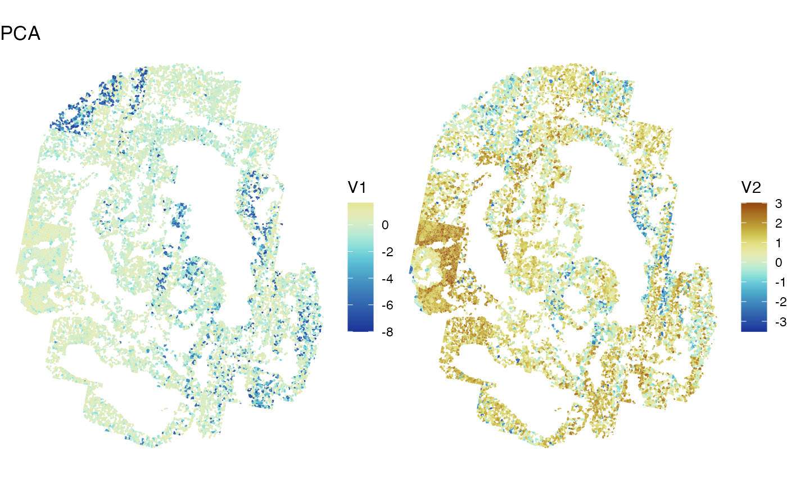
Unfortunately, FOV artifacts can still be seen.
Clustering
Much like in single cell analysis, we can use the batch-corrected data to cluster the cells. We will implement a graph-based clustering algorithm and plot the resulting clusters in space.
colData(sfe)$cluster <-
clusterRows(reducedDim(sfe, "PCA"),
BLUSPARAM = SNNGraphParam(
cluster.fun = "leiden",
cluster.args = list(
resolution_parameter = 0.5,
objective_function = "modularity")
)
)The plot below is colored by cluster ID and by the cell types provided by the author.
plotSpatialFeature(sfe, c("cluster", "celltype_mapped_refined"),
colGeometryName = "seg_coords") &
theme_void()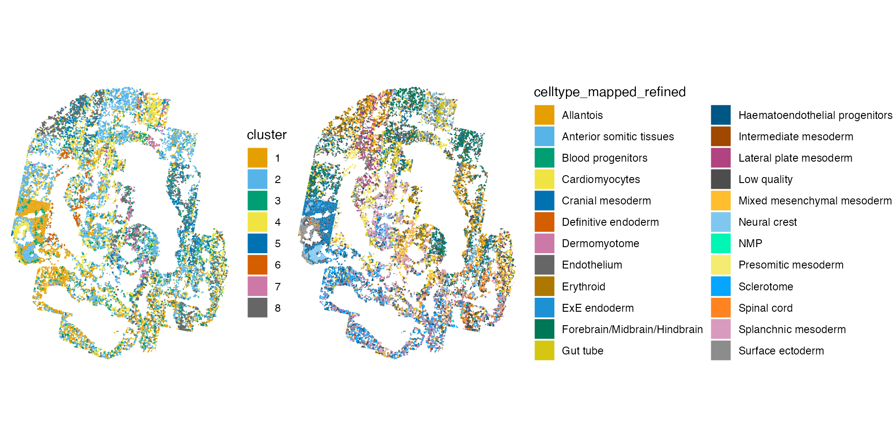
The authors have assigned cells to more types than are identified in
the clustering step. In any case, the clustering results seem to
recapitulate the major cell niches from the previous annotations. We can
compute the Rand
index using a function from the fossil package to
assess the similarity between the two clustering results. A value of 1
would suggest the clustering results are identical, while a value of 0
would suggest that the results do not agree at all.
g1 <- as.numeric(colData(sfe)$cluster)
g2 <- as.numeric(colData(sfe)$celltype_mapped_refined)
rand.index(g1, g2)
#> [1] 0.8400925The relatively large Rand index suggests that cells are often found in the same cluster in both cases.
Univariate Spatial Statistics
At this point, we may be interested in identifying genes that exhibit spatial variability, or whose expression depends on spatial location within the tissue. Measures of spatial autocorrelation can be useful in identifyign genes that display spatial variablity. Among the most common measures are Moran’s I and Geary’s C. In the latter case, a less than 1 indicates positive spatial autocorrelation, while a value larger than 1 points to negative spatial autocorrelation. In the former case, positive and negative values of Moran’s I indicate positive and negative spatial autocorrelation, respectively.
These tests require a spatial neighborhood graph for computation of
the statistic. There are several ways to define spatial neighbors and
the findSpatialNeighbors() function wraps all of the
methods implemented in the spdep package. Below, we compute
a k-nearest neighborhood graph. The dist_type = "idw"
weights the edges of the graph by the inverse distance between
neighbors.
colGraph(sfe, "knn5") <- findSpatialNeighbors(
sfe, method = "knearneigh", dist_type = "idw",
k = 5, style = "W")We will also save the most variable genes for use in the computations below.
dec <- modelGeneVar(sfe)
hvgs <- getTopHVGs(dec, n = 100)We use the runUnivariate() function to compute the
spatial autocorrelation metrics and save the results and save them in
the SFE object. The mc type for each test implements a
permutation test for each statistic and relies on the nsim
argument for computing a p-value for the statistic.
sfe <- runUnivariate(
sfe, type = "geary.mc", features = hvgs,
colGraphName = "knn5", nsim = 100)
sfe <- runUnivariate(
sfe, type = "moran.mc", features = hvgs,
colGraphName = "knn5", nsim = 100)
sfe <- colDataUnivariate(
sfe, type = "moran.mc", features = c("nCounts", "nGenes"),
colGraphName = "knn5", nsim = 100)We can plot the results of the Monte Carlo simulations:
plotMoranMC(sfe, "Meox1")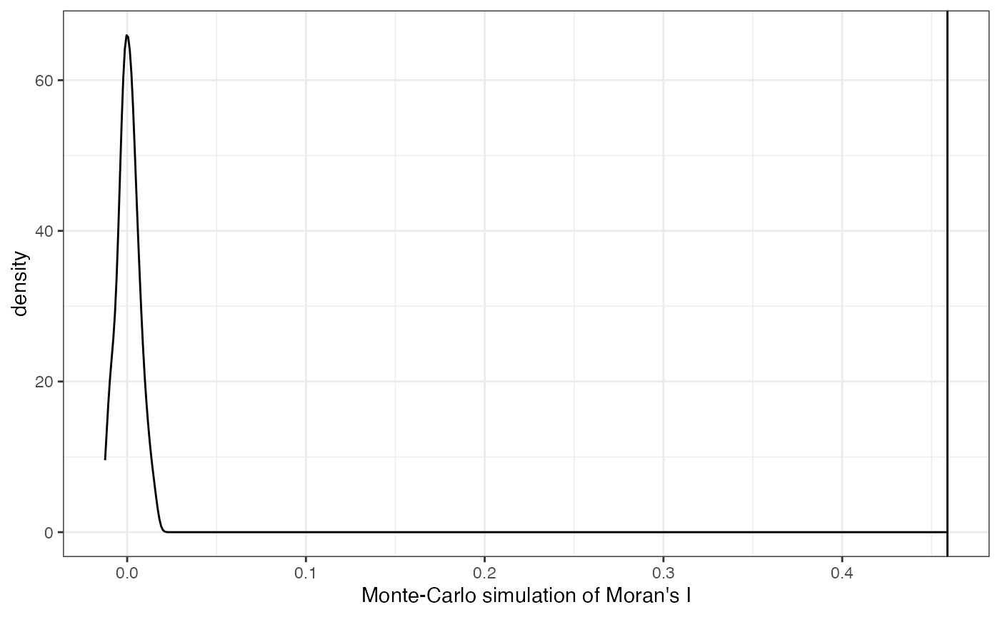
The vertical line represents the observed value of Moran’s I and the density represents Moran’s I computed from the permuted data. These simulations suggest that the spatial autocorrelation for this feature is significant.
The function can also be used to plot the geary.mc
results.
Now, we might ask: which genes display the most spatial autocorrelation?
top_moran <- rownames(sfe)[order(-rowData(sfe)$moran.mc_statistic_sample01)[1:4]]
plotSpatialFeature(sfe, top_moran, colGeometryName = "seg_coords") &
theme_void()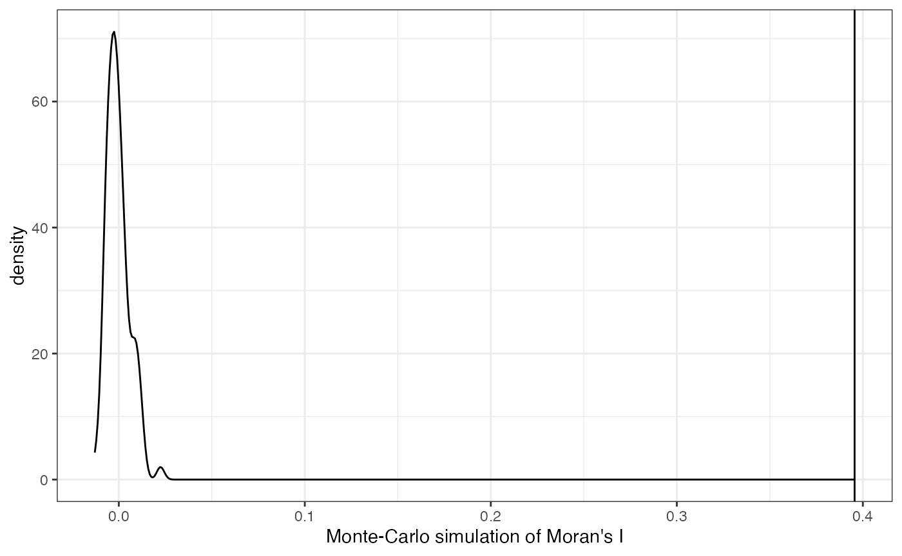
It appears that the genes with the highest spatial autocorrelation seem to have obvious expression patterns in the tissue.
It would be interesting to see if these genes are also differentially
expressed in the clusters above. Non-spatial differential gene
expression can be interrogated using the findMarkers()
function implemented in the scran package and more complex
methods for identifying spatially variable genes are actively being
developed.
These analyses bring up interesting considerations. For one, it is unclear whether normalization scheme employed here effectively removes FOV batch effects. That said, there may be times where FOV differences are expected and represent biological differences, for example in the context of a tumor sample. It remains to be seen what normalization methods will perform best in these cases, and this is represents an area for research.
Session Info
sessionInfo()
#> R version 4.2.2 (2022-10-31)
#> Platform: x86_64-apple-darwin17.0 (64-bit)
#> Running under: macOS Big Sur ... 10.16
#>
#> Matrix products: default
#> BLAS: /Library/Frameworks/R.framework/Versions/4.2/Resources/lib/libRblas.0.dylib
#> LAPACK: /Library/Frameworks/R.framework/Versions/4.2/Resources/lib/libRlapack.dylib
#>
#> locale:
#> [1] en_US.UTF-8/en_US.UTF-8/en_US.UTF-8/C/en_US.UTF-8/en_US.UTF-8
#>
#> attached base packages:
#> [1] stats4 stats graphics grDevices utils datasets methods
#> [8] base
#>
#> other attached packages:
#> [1] BiocParallel_1.32.5 spdep_1.2-7
#> [3] sf_1.0-9 spData_2.2.1
#> [5] patchwork_1.1.2 fossil_0.4.0
#> [7] shapefiles_0.7.2 foreign_0.8-84
#> [9] maps_3.4.1 sp_1.6-0
#> [11] dplyr_1.1.0 tidyr_1.3.0
#> [13] purrr_1.0.1 bluster_1.8.0
#> [15] scran_1.26.2 scater_1.27.6
#> [17] ggplot2_3.4.1 scuttle_1.8.4
#> [19] batchelor_1.14.1 SpatialFeatureExperiment_1.0.3
#> [21] SpatialExperiment_1.8.0 SingleCellExperiment_1.20.0
#> [23] SummarizedExperiment_1.28.0 Biobase_2.58.0
#> [25] GenomicRanges_1.50.2 GenomeInfoDb_1.34.9
#> [27] IRanges_2.32.0 S4Vectors_0.36.1
#> [29] BiocGenerics_0.44.0 MatrixGenerics_1.10.0
#> [31] matrixStats_0.63.0 Voyager_1.0.10
#>
#> loaded via a namespace (and not attached):
#> [1] systemfonts_1.0.4 igraph_1.4.1
#> [3] digest_0.6.31 htmltools_0.5.4
#> [5] viridis_0.6.2 magick_2.7.3
#> [7] fansi_1.0.4 magrittr_2.0.3
#> [9] memoise_2.0.1 ScaledMatrix_1.6.0
#> [11] cluster_2.1.4 limma_3.54.1
#> [13] R.utils_2.12.2 pkgdown_2.0.7
#> [15] colorspace_2.1-0 ggrepel_0.9.3
#> [17] textshaping_0.3.6 xfun_0.37
#> [19] RCurl_1.98-1.10 jsonlite_1.8.4
#> [21] glue_1.6.2 gtable_0.3.1
#> [23] zlibbioc_1.44.0 XVector_0.38.0
#> [25] DelayedArray_0.24.0 scico_1.3.1
#> [27] BiocSingular_1.14.0 DropletUtils_1.18.1
#> [29] Rhdf5lib_1.20.0 HDF5Array_1.26.0
#> [31] scales_1.2.1 DBI_1.1.3
#> [33] edgeR_3.40.2 Rcpp_1.0.10
#> [35] viridisLite_0.4.1 units_0.8-1
#> [37] dqrng_0.3.0 rsvd_1.0.5
#> [39] proxy_0.4-27 ResidualMatrix_1.8.0
#> [41] metapod_1.6.0 RColorBrewer_1.1-3
#> [43] wk_0.7.1 farver_2.1.1
#> [45] pkgconfig_2.0.3 R.methodsS3_1.8.2
#> [47] sass_0.4.5 deldir_1.0-6
#> [49] locfit_1.5-9.7 utf8_1.2.3
#> [51] labeling_0.4.2 tidyselect_1.2.0
#> [53] rlang_1.0.6 munsell_0.5.0
#> [55] tools_4.2.2 cachem_1.0.7
#> [57] cli_3.6.0 dbscan_1.1-11
#> [59] generics_0.1.3 evaluate_0.20
#> [61] stringr_1.5.0 fastmap_1.1.1
#> [63] yaml_2.3.7 ragg_1.2.5
#> [65] knitr_1.42 fs_1.6.1
#> [67] s2_1.1.2 sparseMatrixStats_1.10.0
#> [69] R.oo_1.25.0 compiler_4.2.2
#> [71] beeswarm_0.4.0 e1071_1.7-13
#> [73] tibble_3.1.8 statmod_1.5.0
#> [75] bslib_0.4.2 stringi_1.7.12
#> [77] highr_0.10 desc_1.4.2
#> [79] lattice_0.20-45 Matrix_1.5-3
#> [81] classInt_0.4-8 vctrs_0.5.2
#> [83] pillar_1.8.1 lifecycle_1.0.3
#> [85] rhdf5filters_1.10.0 jquerylib_0.1.4
#> [87] BiocNeighbors_1.16.0 cowplot_1.1.1
#> [89] bitops_1.0-7 irlba_2.3.5.1
#> [91] R6_2.5.1 KernSmooth_2.23-20
#> [93] gridExtra_2.3 vipor_0.4.5
#> [95] codetools_0.2-19 boot_1.3-28.1
#> [97] rhdf5_2.42.0 rprojroot_2.0.3
#> [99] rjson_0.2.21 withr_2.5.0
#> [101] GenomeInfoDbData_1.2.9 parallel_4.2.2
#> [103] grid_4.2.2 beachmat_2.14.0
#> [105] class_7.3-21 rmarkdown_2.20
#> [107] DelayedMatrixStats_1.20.0 ggnewscale_0.4.8
#> [109] ggbeeswarm_0.7.1